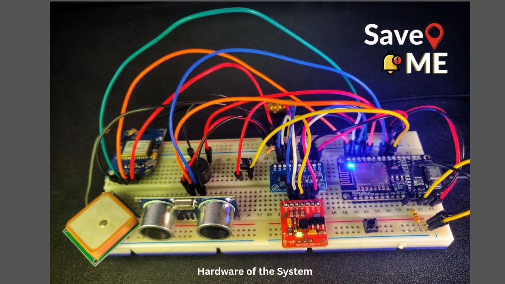
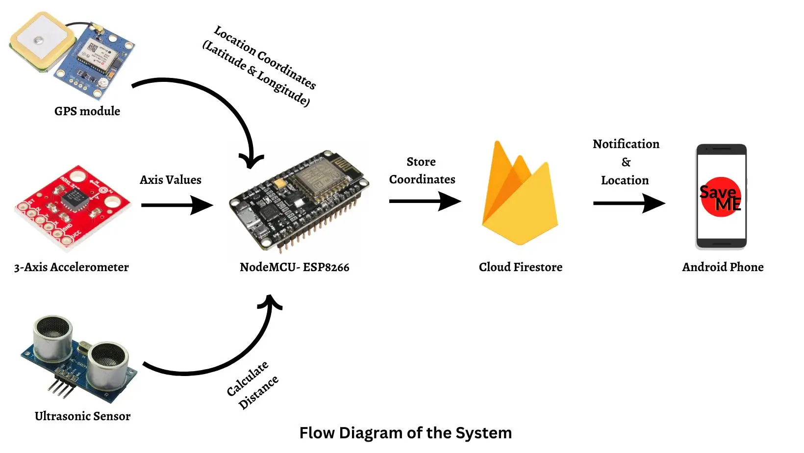
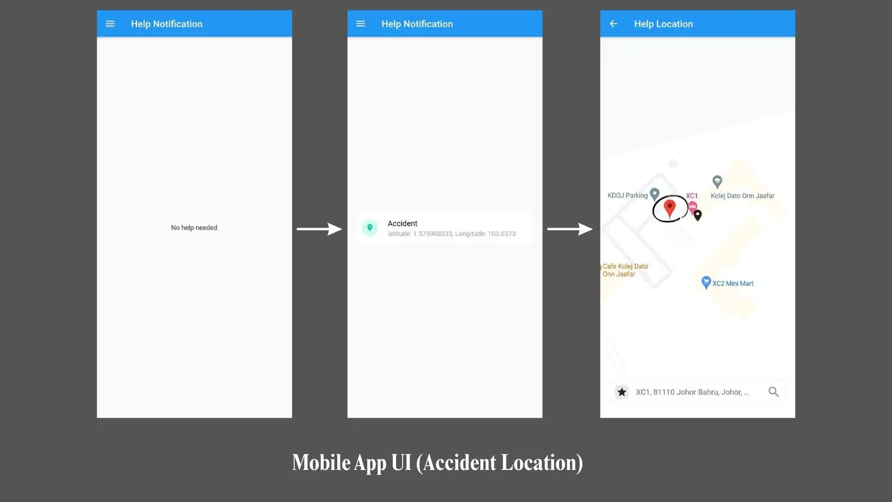
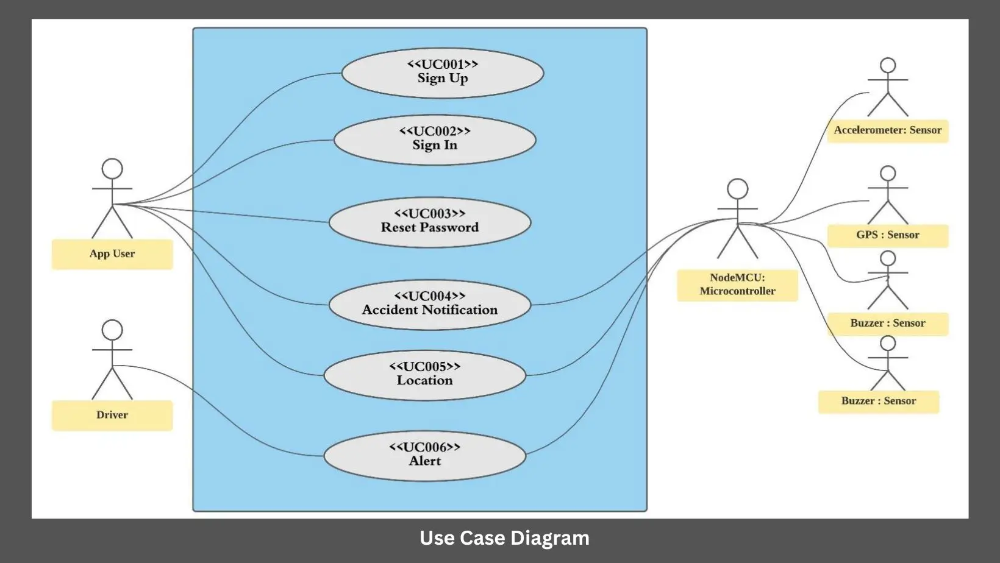

Save Me: Accident Alert System
Project Information
- Category: IoT / Embedded Systems
- Context: Final Year Project (Academic)
- Grade: A+ Achieved
- Hardware: NodeMCU ESP32, GPS, Accelerometer
- Software: Flutter (Dart), Firebase, C++
Tech Stack
Hardware Components:
- NODEMCU ESP32
- GY-NEO6MV2 GPS Module
- HC-SR04 Ultrasonic Sensor
- 3-Axis Accelerometer
Software Tools:
- Dart / Flutter (Mobile App)
- Google Firestore (Database)
- Arduino IDE (Firmware)
Project Overview
"Save Me" is an IoT-based system designed to mitigate traffic fatalities by shortening emergency response times. By automatically detecting accidents via sensors and notifying authorities with precise locations, this system aims to save lives.



Core Objectives
- Emergency Response: Ensure timely intervention to reduce fatalities.
- Incident Notification: Real-time alerts via a dedicated mobile app.
- Precise Tracking: GPS integration to pinpoint incident locations.
System Workflow
1. Hardware Logic
The NodeMCU ESP32 serves as the brain, connecting via Wi-Fi. The 3-axis accelerometer continuously monitors vehicle stability. If a crash threshold is exceeded, the system triggers. An ultrasonic sensor also alerts drivers of close obstacles via a buzzer to prevent collisions proactively.
2. Software Integration
Once triggered, the hardware sends GPS coordinates to Google Firestore. The Android Application (Flutter) listens for these updates and pushes a real-time notification to the user/authorities. Tapping the notification opens a map with the exact crash location.
System Architecture (Use Cases)

Figure: System Use Case Diagram illustrating User and Driver interactions.
| Feature | Functionality |
|---|---|
| Accident Detection | Accelerometer detects sudden impact/tilt based on XYZ axis thresholds. |
| Location Tracking | GPS Module fetches latitude/longitude and displays it on the App Map. |
| Real-time Notification | Push notifications alert emergency contacts instantly upon detection. |
| Proximity Alert | Hardware buzzer warns driver if obstacles are too close (Ultrasonic). |
Conclusion
The "Save Me" system demonstrates how IoT and Mobile technologies can be bridged to solve critical real-world problems. By integrating advanced hardware sensors with a cloud-connected mobile app, the system ensures that help arrives when it matters most.